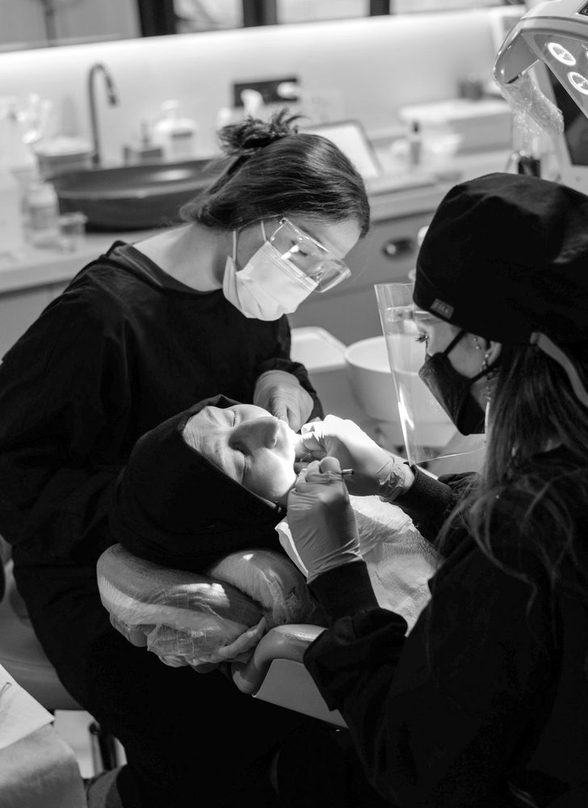
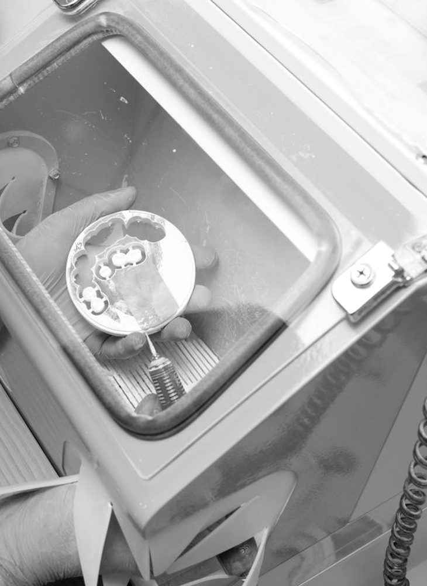
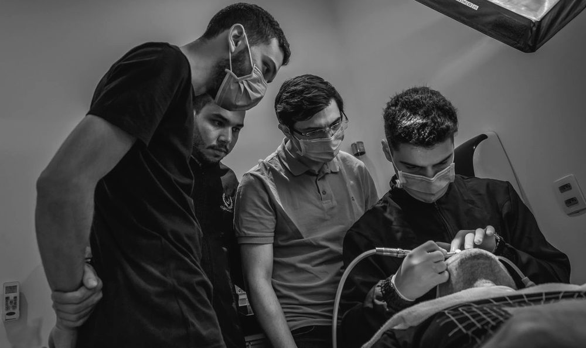
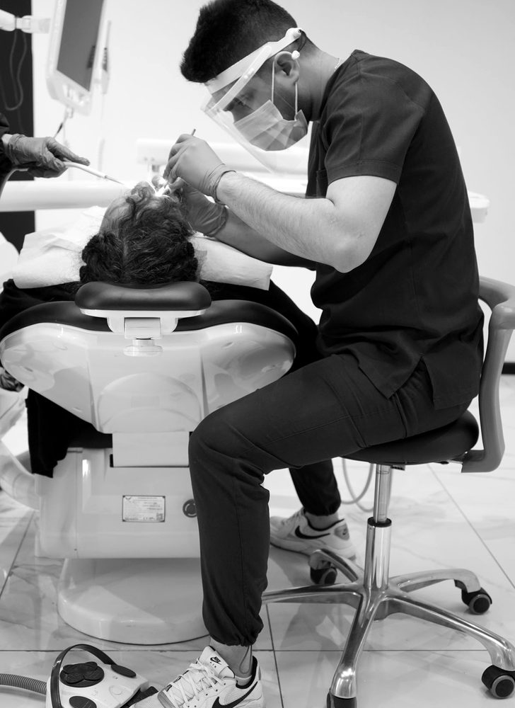

About
Dental practice
Landshut
A modern feel-good practice
Everything starts with a vision. Ours was to create a modern, technically top-equipped dental practice with a feel-good character, easy to reach in the centre of Landshut. A practice without that typical "dentist feeling". You know what we mean: annoying drilling noises in the waiting room, pale yellow walls… You won't find any of that here — because we turned our vision into reality!
Our dental practice in Landshut is fully air-conditioned and kept in clean black and white. The reception and waiting area on the ground floor is as stylish as a hotel lobby. As soon as your name appears on the screen, you take the lift up to the 2nd floor, where our lovely team is already waiting for you. And then? You're looked after from A to Z and informed about every step in advance — because your happy smile is what matters most to us!
Sounds relaxing? Then come and meet us!
Dream
big, act
bigger
Every dream begins with a first step. Or with an optimistic smile. Either way, the most important thing is to keep going. And that's how we worked our way up — from a modest dental practice in Landshut, founded in 1978 by Dr. Hofer in the newly built medical centre, to a practice of three hundred and fifty square metres that has existed since 2022, with a spacious reception area, 7 treatment rooms and our own lab.

Tradition and modernity

Along the way, the practice passed into the hands of the Brandl family. In 1991 Dr. Markus Brandl took over the practice. In 2014 he brought his son Dr. med. dent (D.M.D) Jonas Brandl on board, who took over management in 2020.
Over the years the practice was also repeatedly modernised and extended — for example with its own lab in 1999, rooms on the 2nd floor in 2017 and additional functional rooms and a conference room in 2021.
Over the years we have also invested in digitalisation and innovative technical equipment, such as a 3D X-ray machine.
And now? We love coming into our practice with a big grin, and we look forward to showing you everything and, above all, making your smile even brighter!
Working
together
is success
Teamwork
is everything

Actually, it should say: in the beginning there was the team
A smile can change worlds — and healthy teeth can last a lifetime! That's why good preventive dental care is essential, and it starts with children. Whether it's the annual check-up or regular prophylaxis — together we lay the foundation for your dental health.
Dr. med.
dent (D.M.D)
Jonas Brandl
Dr. med. dent (D.M.D) Jonas Brandl has been part of the team since 2014 and has been the practice's principal dentist since 2020.
University
2008–2013 Ludwig Maximilian University of Munich
Professional experience
02/14 – 12/17: Employed dentist with Dr. Markus Brandl
01/18 – 08/20: Joint practice with Dr. Markus Brandl
09/20 – today: Took over the practice as sole owner
School education
1995–1999: Primary school Ergolding
1999–2008: Grammar school in Landshut, Abitur
Further training
ZBV Upper Bavaria curriculum: Business administration in dentistry, 2015–2016
Curriculum in aesthetic dentistry, 2017–2019
Ongoing attendance at congresses and trade fairs
Memberships
DGZMK, German Society for Dental, Oral and Maxillofacial Medicine
DGÄZ, German Society for Aesthetic Dentistry
APW, Academy for Practice and Science
Other
Founded the "Medical Centre Landshut" working group to improve interdisciplinary coordination between medical specialties
Special skills and interests
Languages: German, English, Italian
Interests: cycling, mountaineering
